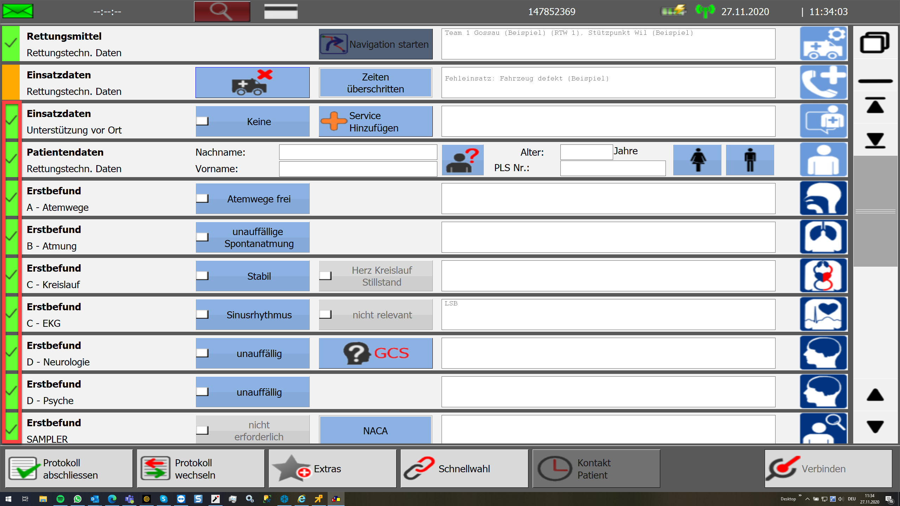

Einsatzabbruch auf dem AmbuPad
Einsatz abbrechen - Erfassung auf dem Ambulance Pad
Einen Einsatzabbruch kann auf dem Ambulance Pad mithilfe des Buttons "Einsatzabbruch" durchgeführt werden
Wird dieser Button angewählt, öffnet sich ein Untermenü.
In diesem Menü wird der Grund für den Einsatzabbruch ausgewählt.
Nach dem Anwählen des Grundes für den Einsatzabbruch, werden auf dem Ambulance Pad alle weiteren Felder automatisch auf "Grün" geschaltet, da bei einem Einsatzabbruch keinen Kontakt zu einem Patienten besteht.

Import des Einsatzes
Nach dem der Einsatz aus der Inbox (Bei manchen Kunden automatisch) importiert wurde, wird der Einsatz mit der Leistungsart (Einsatzabbruch durch SNZ) und der Begründung für den Einsatzabbruch (Auswahl auf dem AmbuPad) erfasst.
Es wird auf dem Einsatz kein Patient verknüpft und das Protokoll wird auf dem Einsatz abgelegt!
Workaround - falsch erfasste Fehleinsätze
Wenn ein Einsatzabbruch falsch erfasst wurde, und somit ein Patient auf dem Einsatz erzeugt wurde, kann dies mithilfe ein paar kleinen Schritten korrigiert werden.
Die Nummer des Protokolls, welches auf dem Patienten verknüpft ist, bitte notieren.
Nach dem Notieren der Nummer kann der Patient gelöscht werden.
Auf kann auf dem Einsatz im Feld "Nr. des El. Protokolls" die notierte Nummer eingetragen und in ein anderes Feld geklickt werden.
Über den Button "PDF abholen", kann das Protokoll geladen und auf den Einsatz verknüpft werden.
Somit wurde das Protokoll auf den Einsatz verknüpft.